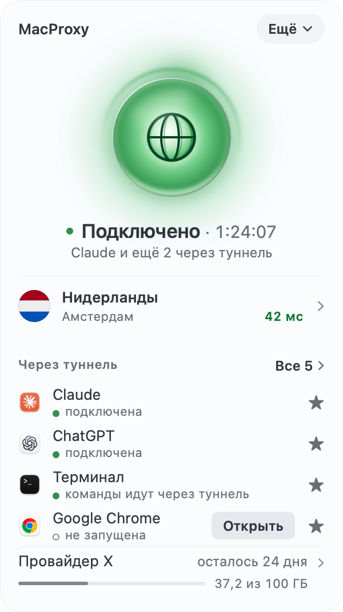
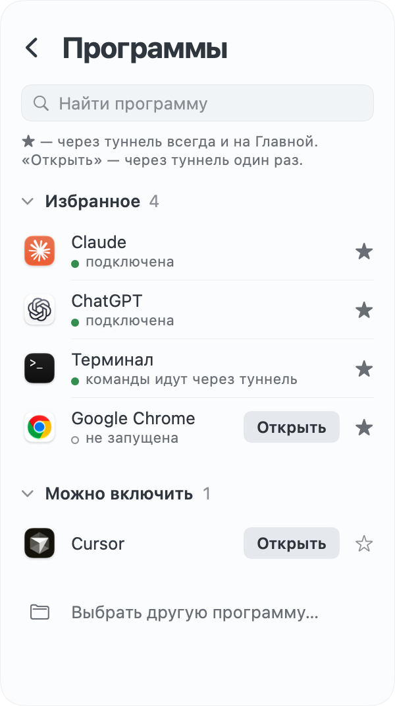
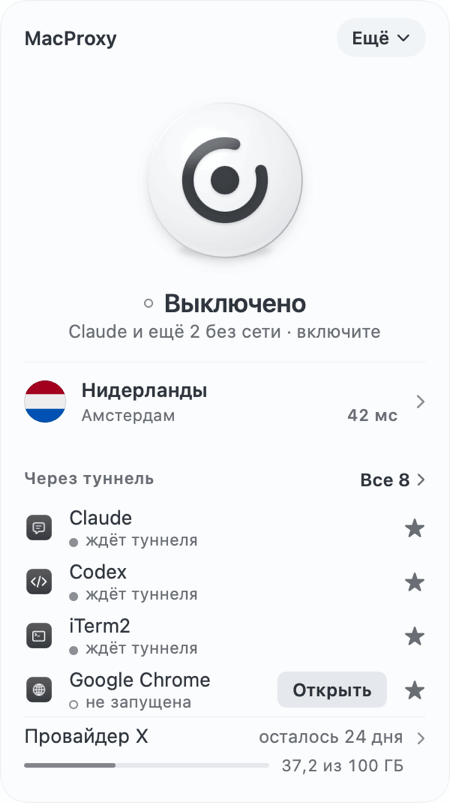
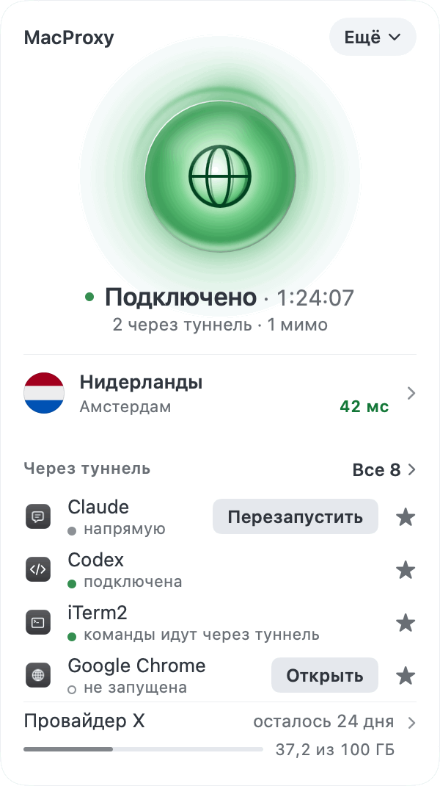
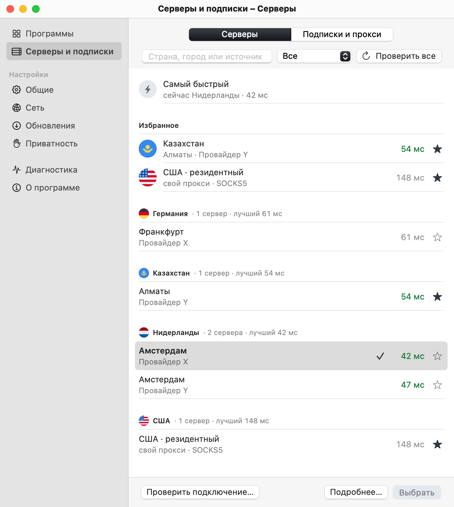
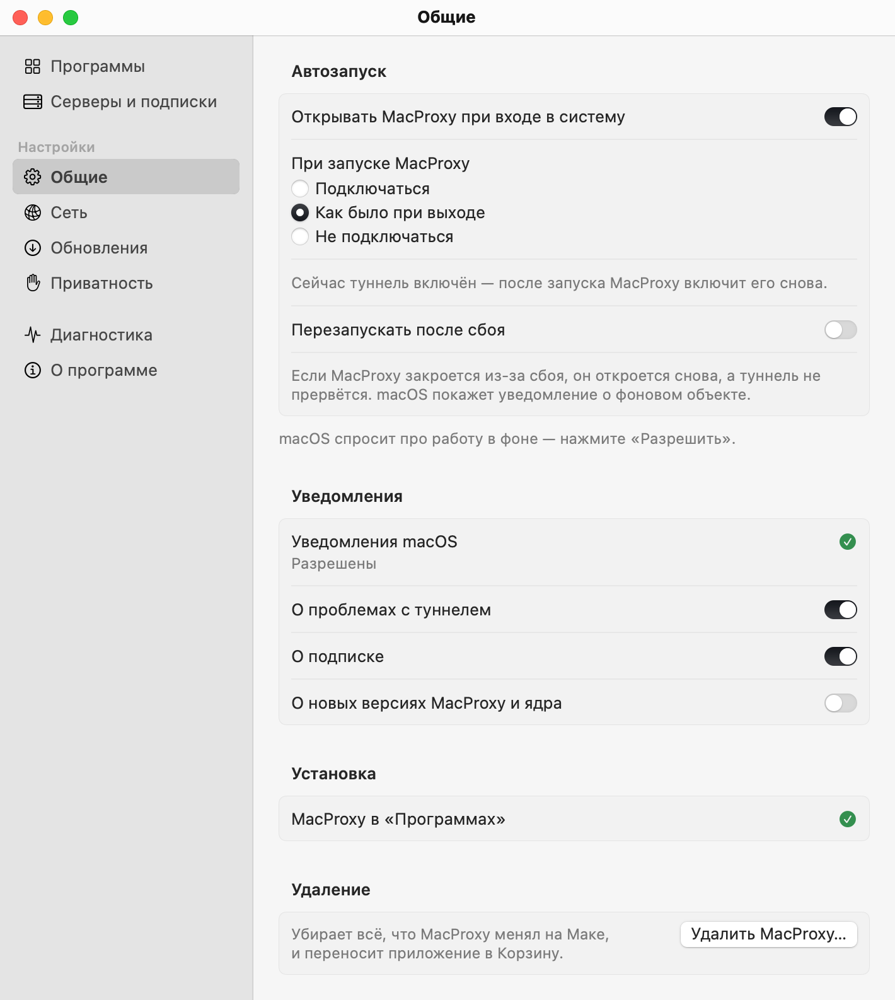
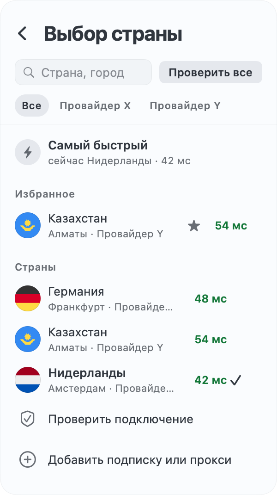
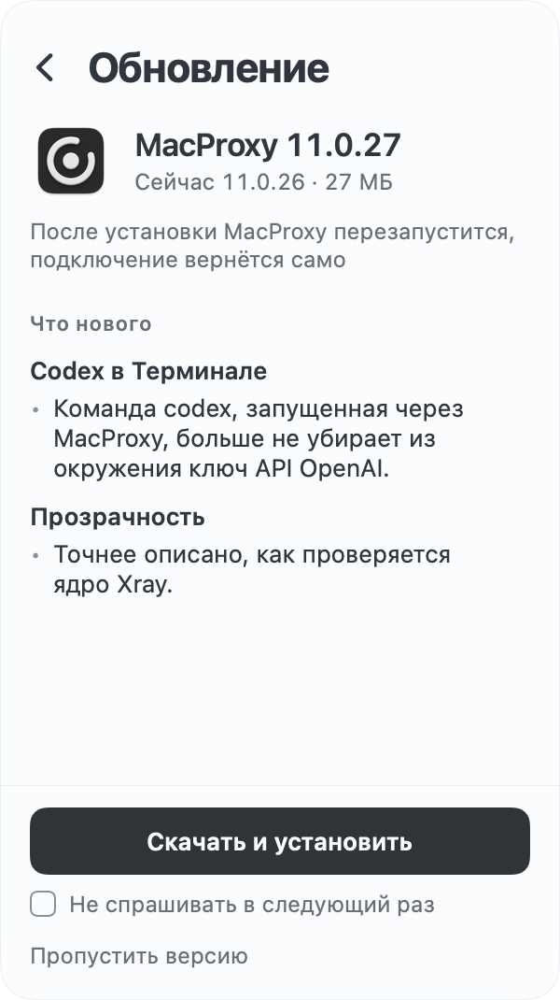

MacProxy живёт в строке меню macOS и пускает через туннель только то, что вы отметили: приложения, браузер в отдельном профиле, команды в Терминале. Остальной Мак ходит напрямую, сетевые настройки не меняются.MacProxy lives in the macOS menu bar and sends through the tunnel only what you pick: apps, a browser in its own profile, commands in Terminal. The rest of your Mac goes direct, and its network settings stay as they are.


Нужна своя подписка или прокси от провайдера VPN. MacProxy — VPN-клиент, серверов он не продаёт. Подойдёт ссылка вида https://…, vless://… или socks5://….You need your own subscription or proxy from a VPN provider. MacProxy is a VPN client and does not sell servers. A link like https://…, vless://… or socks5://… will do.
Через туннель — только выбранное. Всё остальное работает так, будто MacProxy нет.Only what you choose goes through the tunnel. Everything else works as if MacProxy weren't there.
Claude, ChatGPT, Codex, Cursor и другие программы на Electron и Chromium MacProxy открывает с прокси только для них. Отмеченные ★, открытые из Dock или Spotlight, он перезапустит через туннель.Claude, ChatGPT, Codex, Cursor and other Electron and Chromium apps are opened with a proxy for that app only. Starred ★ apps opened from the Dock or Spotlight are restarted through the tunnel.
Команды claude и codex идут через туннель сами, proxy_env включает его для текущей вкладки. Файлы оболочки меняются, только если вы сами это отметите.The claude and codex commands go through the tunnel on their own; proxy_env turns it on for the current tab. Shell files change only if you tick it yourself.
Chrome, Arc, Brave, Edge, Firefox и другие открываются в профиле MacProxy: весь браузер или только сайты из списка.Chrome, Arc, Brave, Edge, Firefox and others open in a MacProxy profile: the whole browser or only the sites on your list.
Кнопка открывает настройку прокси в Telegram, подтверждаете там же. Остальным программам со своими настройками прокси MacProxy подсказывает адрес и где его вписать.The button opens the proxy settings in Telegram; you confirm there. For other apps with their own proxy settings, MacProxy shows the address and where to put it.
Ни системного прокси, ни правки маршрутов и DNS, ни пароля администратора. Туннель выключен — программы, запущенные через MacProxy, по умолчанию остаются без сети, а не идут напрямую.No system proxy, no changes to routes or DNS, no admin password. With the tunnel off, apps started through MacProxy stay offline by default instead of going direct.
Подписки, vless://, vmess://, trojan://, ss://, свои SOCKS5 и HTTP(S), QR-коды. «Самый быстрый» выберет сервер сам, проверка покажет, где сбой.Subscriptions, vless://, vmess://, trojan://, ss://, your own SOCKS5 and HTTP(S), QR codes. “Fastest” picks a server for you; the check shows where things fail.


MacProxy запускает ядро Xray и локальный прокси, который слушает только 127.0.0.1. Выбранные программы попадают в него так, как удобно каждой: флагами запуска, переменными окружения в Терминале, отдельным профилем браузера или своей настройкой прокси.MacProxy runs the Xray core and a local proxy that listens only on 127.0.0.1. The apps you pick reach it in the way that suits each: launch flags, environment variables in Terminal, a separate browser profile or the app's own proxy setting.
claude, codexTerminal: claude, codexПанель в строке меню и окно с серверами и настройками. На снимках — демо-данные.The menu bar panel and a window with servers and settings. Screenshots use demo data; the interface is in Russian for now — an English version is not available yet.




Mac на Apple Silicon (M1 и новее), macOS 14 или новее. Для Mac с процессором Intel сборки нет.A Mac with Apple Silicon (M1 or later), macOS 14 or later. There is no build for Intel Macs.
Запасной путь вместо шагов 2–3, когда MacProxy уже в «Программах»:A fallback instead of steps 2–3, once MacProxy is in Applications:
xattr -dr com.apple.quarantine /Applications/MacProxy.appЗначка в Dock нет: MacProxy живёт в строке меню.There is no Dock icon: MacProxy lives in the menu bar.
Сравните контрольную сумму SHA-256 скачанного образа с этой:Compare the SHA-256 checksum of the downloaded image with this one:
shasum -a 256 ~/Downloads/MacProxy-11.0.28-761-macos-arm64.dmgec91c33a6ef150348b4ed917848fa6fd5d8d278f49d0625c986619eea103037b
MacProxy сам проверяет обновления и показывает новую версию на Главной. Лист обновления показывает заметки к выпуску и ставит её одной кнопкой.MacProxy checks for updates itself and shows a new version on its main screen. The update sheet shows the release notes and installs it with one button.
Обновления идут через Sparkle: лента и каждый архив подписаны (EdDSA), и MacProxy ставит только то, что подписано ключом проекта. Ядро Xray обновляется отдельно: Настройки → Обновления.Updates come through Sparkle: the feed and every archive are signed (EdDSA), and MacProxy installs only what is signed with the project's key. The Xray core is updated separately in Settings → Updates.
~/.zshrc (у bash — из файла входа) и свои ключи прокси из ~/.claude/settings.json, значки «… (proxy)», автозапуск и перезапуск после сбоя, а затем перенесёт приложение в Корзину. Подписки и настройки стираются, только если отметить флажок.It turns off the tunnel, removes its lines from ~/.zshrc (for bash — from the login file) and its proxy keys from ~/.claude/settings.json, the “… (proxy)” launchers, autostart and relaunch after a crash, then moves the app to the Trash. Subscriptions and settings are erased only if you tick the checkbox.~/.zshrc, ~/.bash_profile, ~/.bash_login, ~/.profile и ~/.bashrc удалите строки от # >>> macproxy >>> до # <<< macproxy <<<; в ~/.claude/settings.json — HTTPS_PROXY, HTTP_PROXY и NO_PROXY в разделе env; удалите ~/.config/macproxy, значки «… (proxy).app» в ~/Applications и MacProxy в Системные настройки → Основные → Объекты входа и расширения.In ~/.zshrc, ~/.bash_profile, ~/.bash_login, ~/.profile and ~/.bashrc delete the lines from # >>> macproxy >>> to # <<< macproxy <<<; in ~/.claude/settings.json — HTTPS_PROXY, HTTP_PROXY and NO_PROXY under env; delete ~/.config/macproxy, the “… (proxy).app” launchers in ~/Applications, and MacProxy in System Settings → General → Login Items & Extensions.~/Library/Application Support/MacProxy, ~/Library/Logs/MacProxy и ~/Library/Caches/MacProxy можно удалить; настройки — defaults delete io.github.agwor.macproxy.~/Library/Application Support/MacProxy, ~/Library/Logs/MacProxy and ~/Library/Caches/MacProxy can be deleted; preferences — defaults delete io.github.agwor.macproxy.На Маке. Подписки, серверы и настройки лежат в ~/Library/Application Support/MacProxy в файлах, доступных только вашей учётной записи. Журналы — в ~/Library/Logs/MacProxy: 14 дней, не больше 20 МиБ, без адресов серверов, ссылок подписок и паролей.On your Mac. Subscriptions, servers and settings are kept in ~/Library/Application Support/MacProxy in files readable only by your user account. Logs are in ~/Library/Logs/MacProxy: 14 days, at most 20 MiB, without server addresses, subscription links or passwords.
Куда MacProxy обращается сам — больше никуда, ни аналитики, ни телеметрии:Where MacProxy connects on its own — nowhere else; no analytics, no telemetry:
| Обновления MacProxyMacProxy updates | лента обновлений на GitHub Pagesthe update feed on GitHub Pages |
|---|---|
| Список версий ядра XrayXray core versions | GitHub; файл нового ядра — оттуда жеGitHub; a new core comes from there too |
| ПодпискиSubscriptions | провайдеру: адрес подписки, название программы и отпечаток Мака (необратимый хэш) при обновлении списка серверовyour provider: the subscription address, the app name and a Mac fingerprint (a one-way hash) when the server list is refreshed |
| Проверка связиConnection check | пустой ответ Google (generate_204) через туннельan empty Google response (generate_204) through the tunnel |
| Страна выходаExit country | ipinfo.io через туннель, запасной — Cloudflare; можно выключитьipinfo.io through the tunnel, Cloudflare as a fallback; can be turned off |
| Проверка сервисовServices check | Claude, API Anthropic, ChatGPT и GitHub через туннель — только по кнопкеClaude, the Anthropic API, ChatGPT and GitHub through the tunnel — only when you press the button |
Отчёты об ошибках сами не уходят: отчёт собирается по вашей кнопке, показывается целиком и уходит туда, куда вы его отправите.Error reports are never sent automatically: a report is built when you press the button, shown in full, and goes wherever you send it.
Это VPN-клиент для отдельных программ. Своих серверов у MacProxy нет: он подключается к серверу вашего провайдера VPN или к вашему прокси и пускает через него только выбранные программы.It is a VPN client for individual apps. MacProxy has no servers of its own: it connects to your VPN provider's server or your proxy and sends only the apps you chose through it.
Подписки (https://…, список ссылок текстом или base64), ссылки vless://, vmess://, trojan:// и ss://, свои прокси SOCKS5, HTTP и HTTPS. Hysteria, TUIC, WireGuard и подписки Clash или sing-box не поддерживаются.Subscriptions (https://…, a list of links as text or base64), vless://, vmess://, trojan:// and ss:// links, and your own SOCKS5, HTTP and HTTPS proxies. Hysteria, TUIC, WireGuard and Clash or sing-box subscriptions are not supported.
Нет. Системный прокси MacProxy не включает, маршруты и DNS не меняет. Файлы оболочки и ~/.claude/settings.json меняются, только если вы отметите Claude Code, Codex CLI или Терминал, а удаление убирает эти правки.No. MacProxy does not turn on a system proxy and does not change routes or DNS. Shell files and ~/.claude/settings.json change only if you tick Claude Code, Codex CLI or Terminal, and the uninstaller removes those changes.
Safari и другие программы Apple идут напрямую: MacProxy не может узнать, какой программе Apple принадлежит соединение. Для сайтов через туннель откройте браузер в профиле MacProxy.Safari and other Apple apps go direct: MacProxy cannot tell which Apple app a connection belongs to. For sites through the tunnel, use a browser in a MacProxy profile.
Сборка подписана ad-hoc, без Developer ID Apple, и пока не нотаризована. Разрешите запуск один раз в «Конфиденциальность и безопасность»; дальше обновления MacProxy проверяет по своей подписи.The build is signed ad hoc, without an Apple Developer ID, and is not notarized yet. Allow it once in Privacy & Security; after that, MacProxy checks updates by its own signature.
Пока нет: интерфейс на русском, сборки — только для Apple Silicon.Not yet: the interface is in Russian, and builds are for Apple Silicon only.
Нет. Здесь лежат готовые сборки, лента обновлений и эта страница.No. This site holds the ready builds, the update feed and this page.
Код MacProxy закрыт; в приложение входят:MacProxy itself is closed-source; it bundles:
xray внутри приложения, a separate xray binary inside the appГлобус на кнопке, который виден на снимках, — производная от работы «The Golden Glow Button» (Rive Community, № 18655), автор AmritAaryan, лицензия CC BY 4.0.The globe on the button, visible in the screenshots, is derived from “The Golden Glow Button” (Rive Community, #18655) by AmritAaryan, licensed under CC BY 4.0.
Полные тексты лицензий — в MacProxy.app/Contents/Resources/THIRD-PARTY-NOTICES.txt.Full license texts are in MacProxy.app/Contents/Resources/THIRD-PARTY-NOTICES.txt.